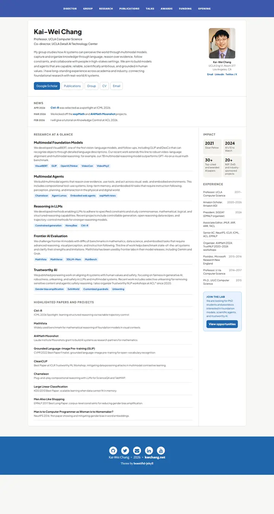

Kai-Wei Chang
A department noticeboard turned into a tidy dashboard: one white panel ruled into hero, news strip, research column and a sidebar of stat tiles, framed by royal-blue bars.

Checked against the rendered page. Several homepage-redesign.css sizes (section label 12px, summary 16px, pill 14px) are overridden by .academic-home p/a at render (15px); the file records the rendered values.
Why it is here
A well organised faculty dashboard. It has a main column of themed research blocks with tag chips, a sidebar of impact stats and an experience timeline, plus a clear call-to-action box.
Overview
Color Palette
Typography
Plus Jakarta Sans
Kai-Wei Chang, fairness and bias in NLP
Abstract · Method · Results · BibTeX — 0123456789
Open Sans
Kai-Wei Chang, fairness and bias in NLP
Abstract · Method · Results · BibTeX — 0123456789
Lora
Kai-Wei Chang, fairness and bias in NLP
Abstract · Method · Results · BibTeX — 0123456789
Spacing & Shape
Page Modules
Guidelines
More like this
Xipeng Qiu
A white sheet laid on a slate desk: a sidebar of credentials, slate-gray cards of research and repositories, and a dotted timeline of honours with crimson highlights.

Amir Bar
A clean faculty prospectus in Imperial blue: Inter on white, pill links, and paper cards that lift a few pixels when you reach for them.

Anagh Malik
The Barron table, warmed with apricot: Lato at 14px, blue links that flash orange, and the papers that matter sitting in a band of late-afternoon light.

Christoph Feichtenhofer
A conference-hall banner in Facebook blue, then a long ledger of papers in red ink, green venues and justified grey abstracts.

David B. Lindell
A lab notebook typeset by a careful editor: Source Serif prose, Source Sans labels, one clear blue, and every paper filed with its photograph.

David Novotny
A harbour at dusk beside a quiet reading room: a fixed teal-to-midnight panel with right-aligned contact lines, and soft grey text with tangerine links on white.